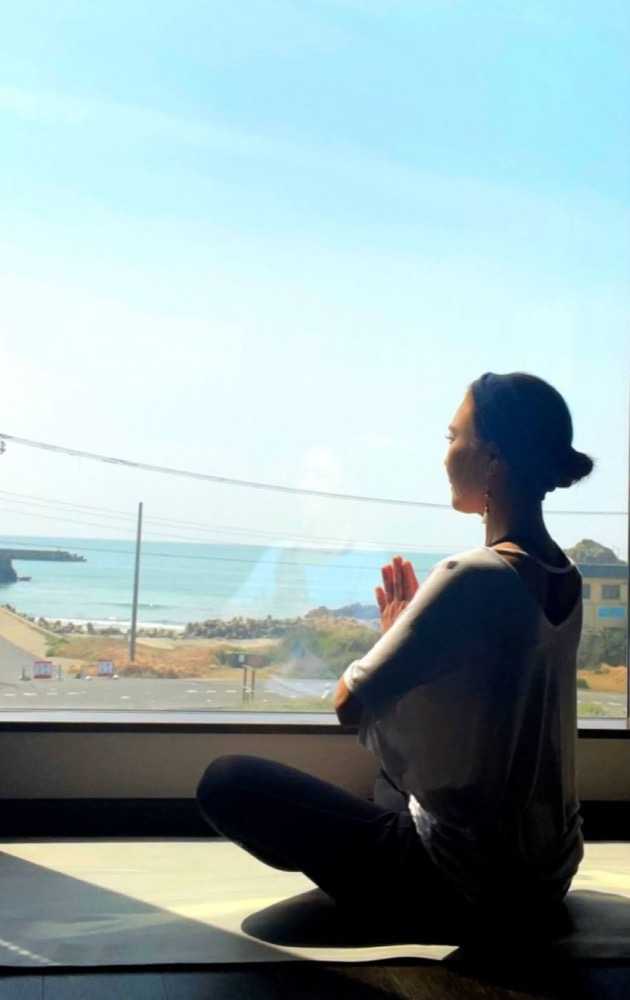
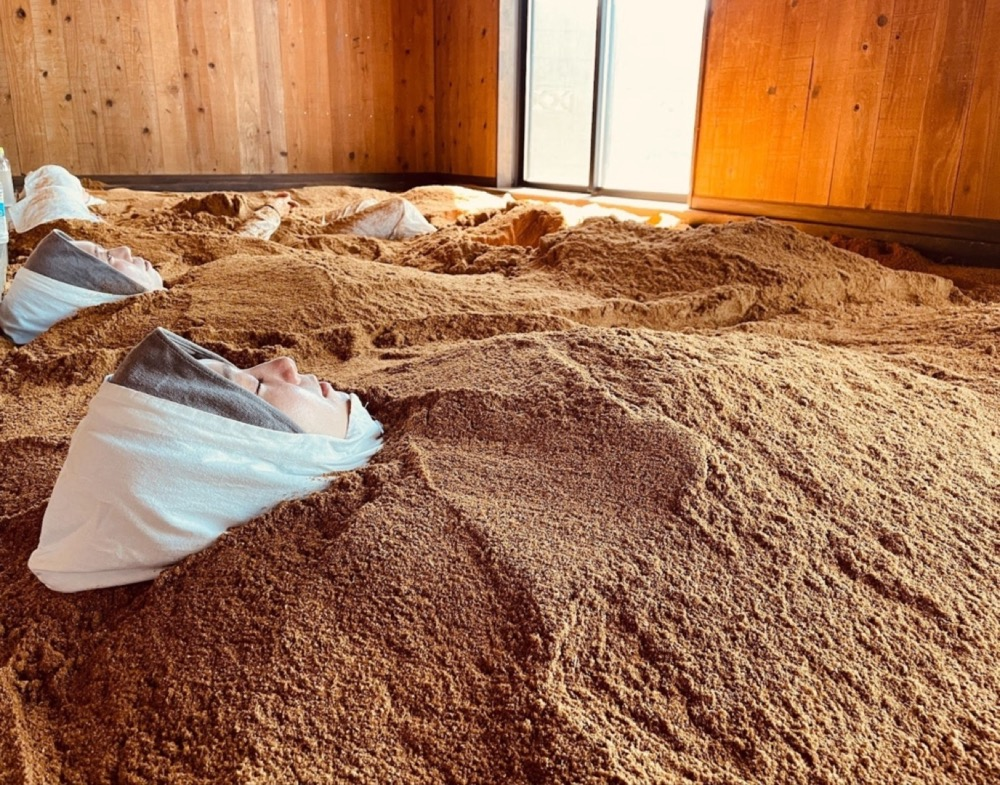
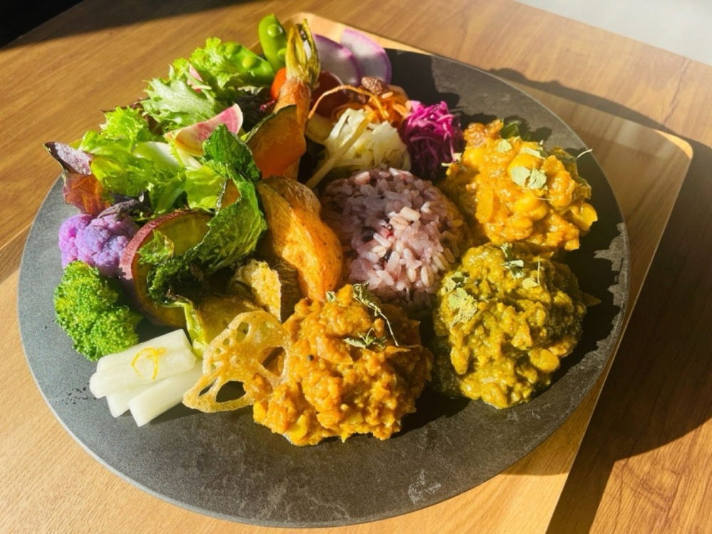
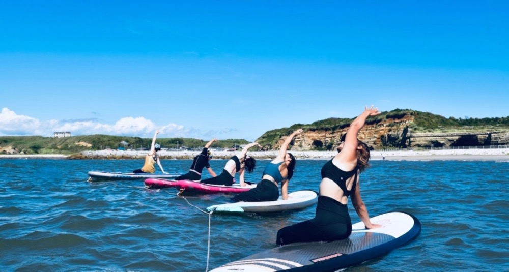

銚子の海で健康を取り戻す
若山 みどりMidori Wakayama
Healing Sea 代表
幼少期の体調不良を機に自己改善を決意。ヨガやマクロビオティックを学び、全米ヨガアライアンス認定や日本サップヨガ協会公認、シニアヨガ、アーユルヴェーダ、薬膳など多彩な資格を取得。2022年のJAPAN CHALLENGER AWARDグランプリ受賞後、Healing Seaを創業。
企業サイトを見るTRACK 01
銚子の海で健康を取り戻す

銚子の青い海と、荒々しくも美しい自然の息吹が漂う街角。そこに「Healing Sea」がある。この会社は、酵素風呂、カフェ、ヨガ、そして海の上でおこなうサップヨガといった、心身の健康を根底から変革する事業を展開している。
会社設立は2024年2月、代表は若山みどり。彼女は、幼少期からアレルギーという身体の弱さと闘いながら、その体験を糧にして自らの道を切り拓いてきた。
TRACK 02
トリガーはビジネスグランプリ受賞

「実は、私も息子もアトピー性皮膚炎に苦しんでいて、常に自分の身体と向き合う日々を過ごしていました。度重なる体調不良を通じて、アレルギー体質や遺伝的要因が関与しているのではないかと思い、体質改善を志すようになりました」と若山は話す。
その苦悩の中で、彼女はマクロビオティックやヨガに出会う。バリに渡り、ヨガインストラクターとしての資格を取得した彼女は、ただのエクササイズを超えた、魂を揺さぶる生き方を手に入れる。その後、全米ヨガアライアンス認定をはじめ、日本サップヨガ協会公認の資格、シニアヨガインストラクター、アーユルヴェーダや薬膳、さらにはマクロビオティックやローフードの資格を次々と手中に収め、まるで多彩な才能の化身のように成長を遂げた。
転機となったのは2022年。JAPAN CHALLENGER AWARDin銚子でグランプリを受賞した瞬間だった。彼女の中で何かが閃いた。その情熱が、自らの体験を基盤にした「Healing Sea」という事業を立ち上げる決意に至ったのだ。


TRACK 03
そこにあるのは究極の自然感覚
Healing Seaの事業内容は一見するとシンプルだが、その裏には深い哲学と洗練された技術が息づいている。自然発酵による酵素風呂は、電気やガスを一切使わず、檜の香りとともに心地よいリラックス効果をもたらす。ここで得られるのは、単なる健康の域を超え、現代人が失いかけている「本来の自分自身」を取り戻すための鍵となる。さらに、海を望むヨガやサップヨガは、銚子の壮大な屏風ヶ浦や歴史ある千騎ケ岩といった自然の力を背景に、心と身体を解き放つ究極のリトリートとして多くの人々を魅了している。そしてカフェでは、地元農家が丹精込めた新鮮な野菜や果物を使い、地産地消の理念を体現。これらの取り組みは、地域活性化や地方創生にも大きなインパクトを与えており、単なるビジネスの枠を超えて地域社会に根差した共生感覚を呼び起こしている。
そんな事業展開をおこなっている若山みどりの仕事に対するこだわりは、その一挙手一投足に如実に表れている。たった1人で運営を始めたHealing Seaは、文字通りお客様一人ひとりと向き合う時間を大切にしている。彼女自身が直接接客し、体験談を交えながらサービスを提供するのだ。
時に、急激な需要に追われる中でも、自分の手でお客様の笑顔を守るという信念を貫き、決して妥協を許さない。その情熱と責任感は、周囲の人々に刺激を与え、口コミを通じてHealing Seaの輪は日増しに広がっていく。